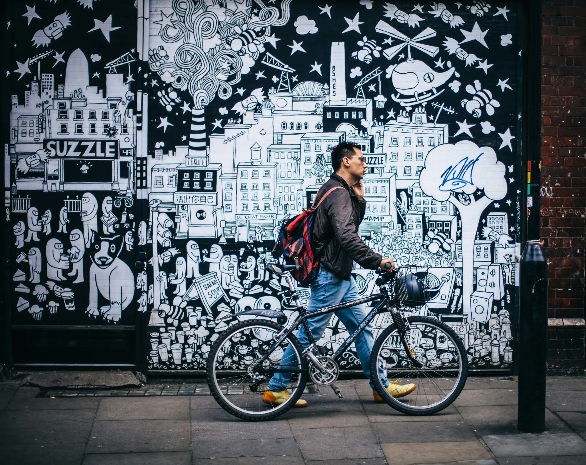
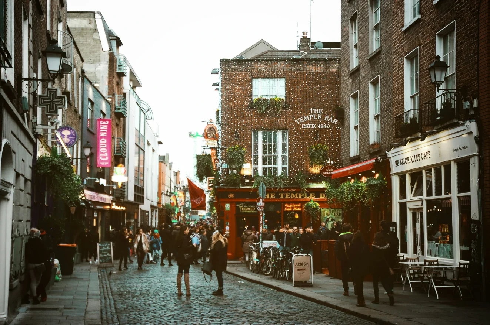
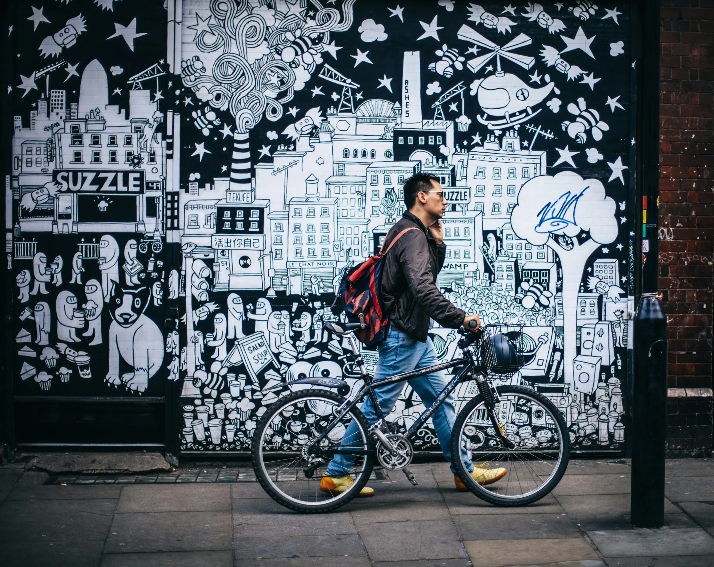
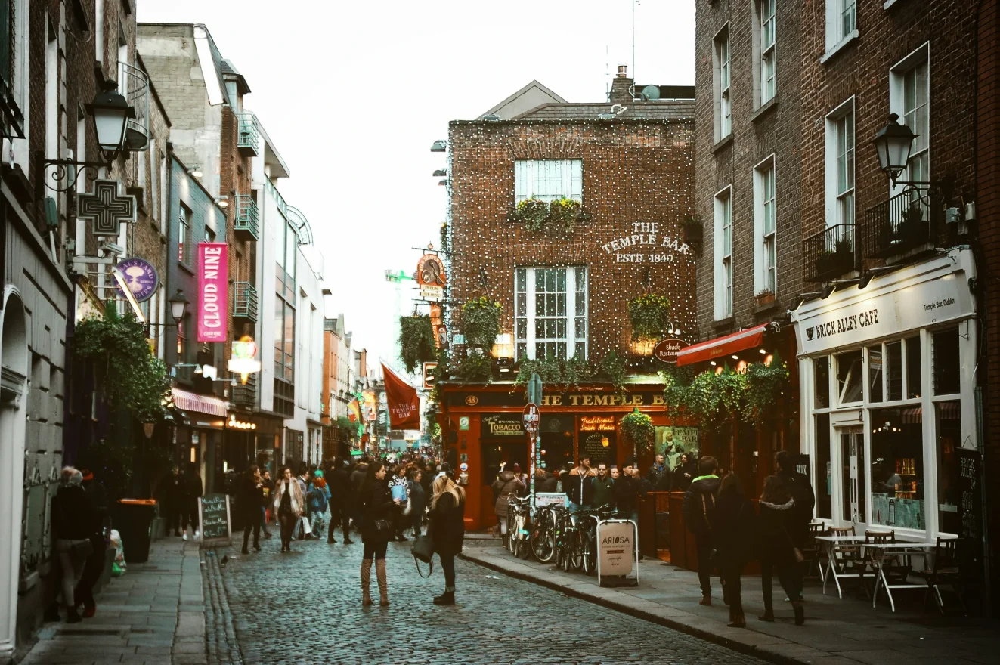
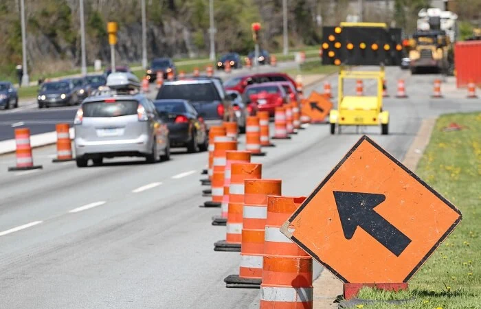
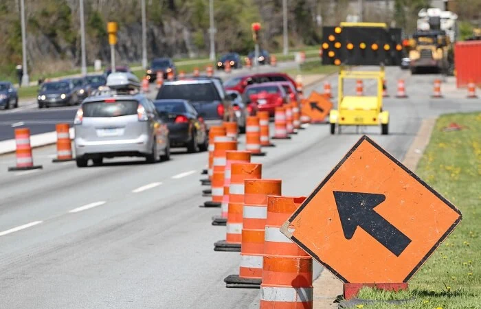

 

History of Car Dependency
1910 - Origin
Car dependency began post-1910s as roads were built for traffic, trams were removed by the 1920s, and infrastructures, like the Interstate Highway System, prioritized cars. The 1956 Highway Trust Fund fueled this shift, using gas taxes to expand car-based networks, locking in reliance on automobiles.
1916 - Zoning
Zoning, starting with New York’s 1916 ordinance, separated residential and commercial areas, especially in suburbs, forcing car use by isolating daily needs. Parking minimums worsened this, creating sprawling, car-centric cities despite alternatives.
2000 - Street Design
Street design boosts car dependency by widening roads for easy driving and adding parking, while making walking or cycling harder. This dual effect sidelines public transit, reinforcing car use over other options.
Our Mission
We aim to shed light on the car-centric flaws of modern cities, advocating for walkable urban spaces that enhance health, reduce emissions, and boost local economies. By raising awareness, we envision communities where pedestrians thrive, sidewalks replace sprawl, and sustainable design reclaims streets from cars, fostering a vibrant, equitable living for all.
Walkability is what makes cities thrive. The more walkable public spaces, businesses and especially communities are, the more quality, value and happiness they provide.
Michał Lorbiecki, Urbanist
I was told that these cities were like this because they were designed for the car. That's not true. They weren't designed for the car, they were bulldozed for the car.
Jason Slaughter, Not Just Bikes
Walkability is not as much about physical proximity but rather a sense of security, inviting you to walk as an alternative form of mobility.
Elan Mordoch, Founder at Integrated Dev.
Walkability is the extent to which an urban area enables and encourages the movement of its people by walking.
CITYWALK Baseline Study (2017)
A developed country is not a place where the poor have cars. It's where the rich use public transportation.
Gustavo Petro, President of Colombia
A beautiful city is a walkable city - and vice versa.
Peter Neumann, Mobility Editor